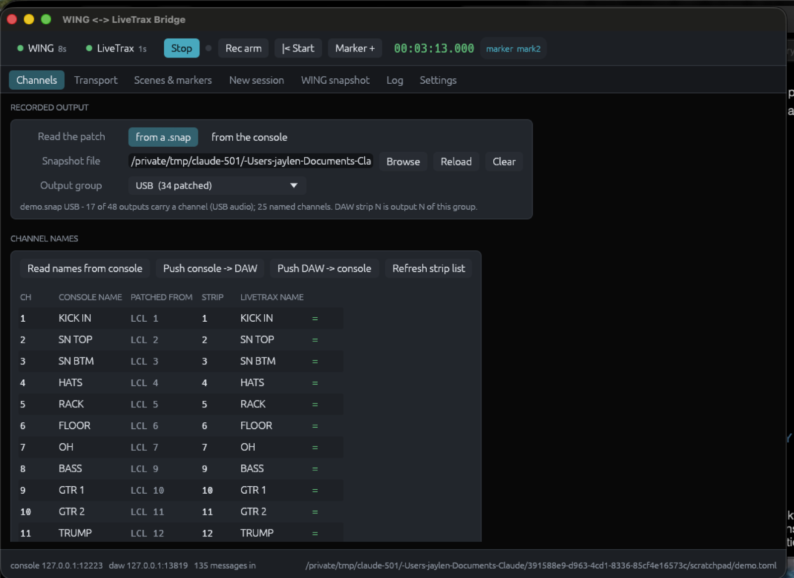
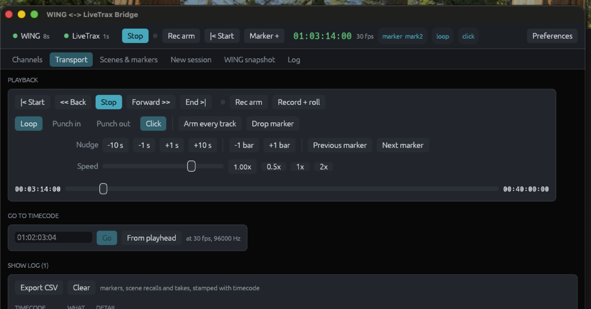
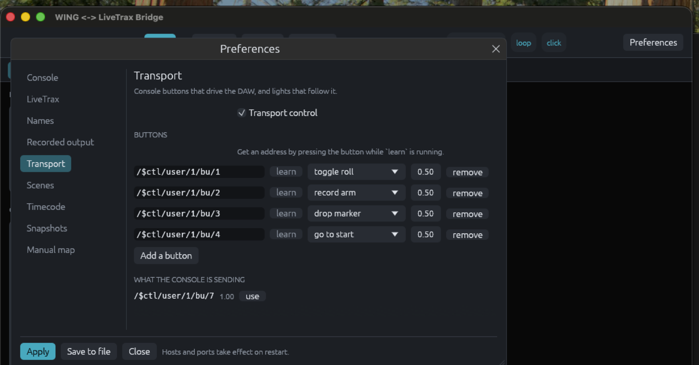
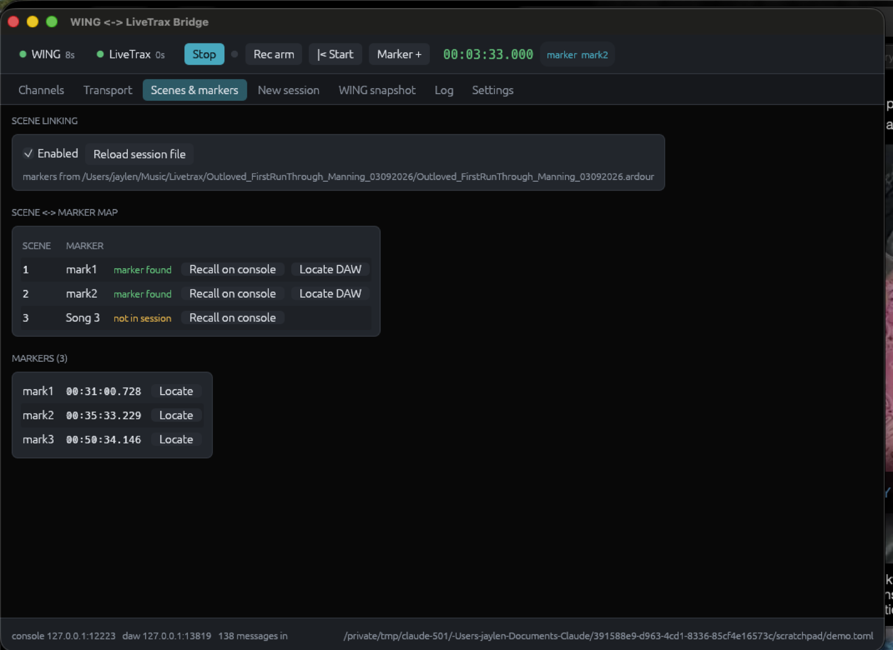
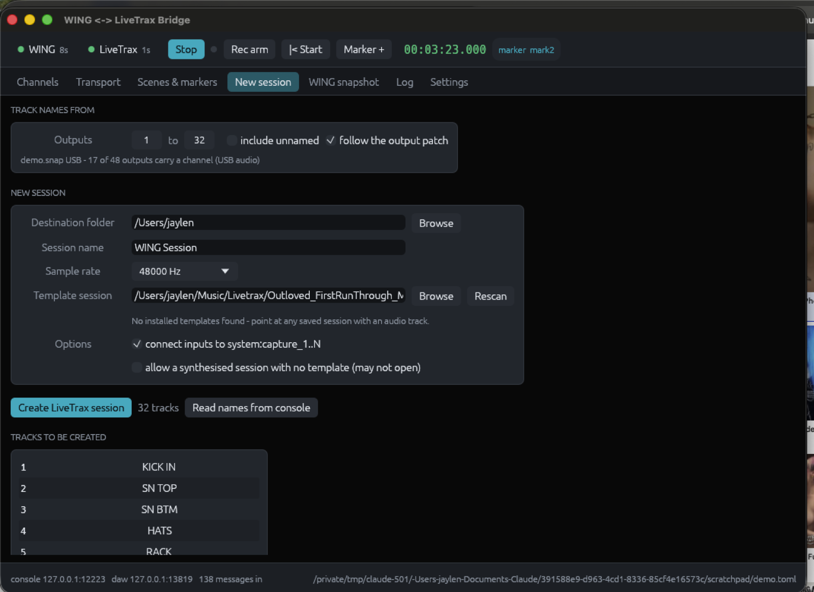
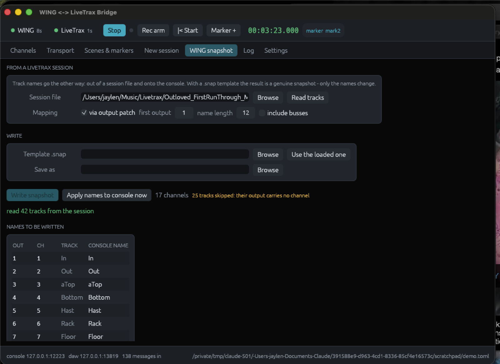
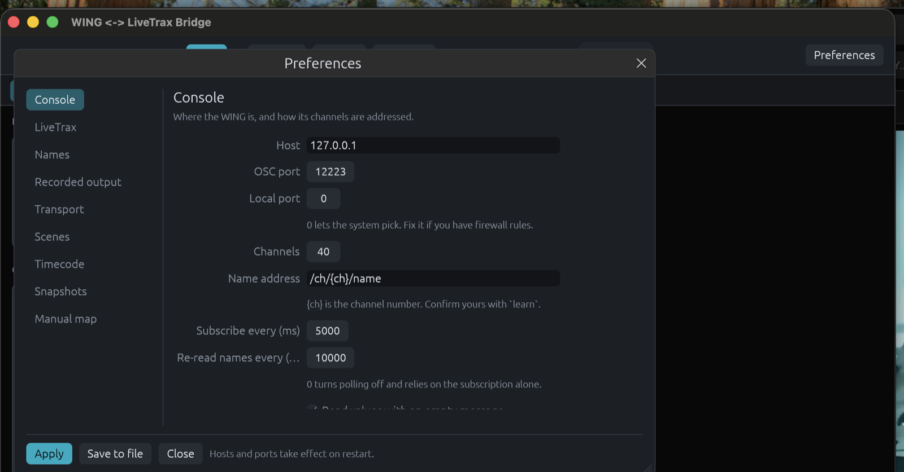

Overview
What it does
- Channel names sync in either direction, debounced and echo-suppressed so a name never ping-pongs.
- Playback and record run from the app or from console user buttons — play, wind, loop, punch, click, varispeed, scrub — with the DAW's state fed back to the console's lights.
- Scenes link to markers: recalling a scene locates the playhead, or drops a named marker if you are already rolling.
- Sessions can be built from the console's channel list, tracks named and in the right order.
- Snapshots go the other way: a LiveTrax session's track names written into a real
.snap. - Everything maps through the console's own output patch, read from a snapshot file or queried live.
- Timecode is read from the DAW, typed into to locate, stamped onto markers, and logged for the edit.
Getting it
Install
Open WING LiveTrax Bridge.app from the disk image, or drag it to Applications. It is signed ad-hoc, so the first launch may need a right-click → Open.
From source, with a Rust toolchain:
git clone <your remote> wing-livetrax-bridge
cd wing-livetrax-bridge
cargo build --release # target/release/wing-livetrax-bridge
packaging/bundle.sh --dmg # dist/WING LiveTrax Bridge.app + .dmgThe app and the command line are the same binary: run it with no arguments for the window, or with a subcommand for the terminal.
Setup
First run
-
Turn on OSC in LiveTrax
Edit → Preferences → Control Surfaces → tick Open Sound Control (OSC). Nothing reaches the DAW until this is on. Note its port; 3819 is the default.
-
Find the console
Setup → Network on the WING gives you its IP. OSC is served on 2223 by the firmware; there is nothing to enable.
-
Point the config at both
The app writes a starter config on first launch to
~/Library/Application Support/WING LiveTrax Bridge/config.toml. Setwing.hostand, if the bridge runs on another machine,livetrax.host.wing-livetrax-bridge init -o config.toml # or make your own -
Confirm the console's addresses
This is the step not to skip: WING's node tree has shifted between firmware revisions, so every console address is configuration rather than code.
wing-livetrax-bridge learn # press a USER button, recall a scenePaste what it prints into
[[transport.buttons]]andscenes.scene_address. -
Check the DAW answers
wing-livetrax-bridge strips # ssid + track name for every strip wing-livetrax-bridge markers # markers from the session fileThen open the app, or run
wing-livetrax-bridge runfor a headless daemon that logs to the terminal.
The idea that makes the rest work
Which output feeds the DAW
A WING records through one port group — USB, the card, AES50 — and that group's output patch decides which source lands on which track. It is rarely channel 1 to track 1.
In a real show file: USB output 14 carries local input 14, which is console channel 17, named VOX. Mapping channels straight across put five names on the wrong tracks. The bridge maps through the patch instead, so DAW strip N is output N of the chosen group.

Two ways to read it
- From a
.snapsaved from the console — works with the desk switched off, and the dropdown lists every group with how much of it is patched. - From the console — press Ask the console and the patch is queried live over OSC, so it matches what the desk is doing right now.
wing-livetrax-bridge snap-info MYSHOW.snap # list the groups
wing-livetrax-bridge snap-info MYSHOW.snap --output USB # resolve one
wing-livetrax-bridge patch --output USB # the same, live
wing-livetrax-bridge patch --groups # what the desk answers for| Group | Port | Patched | What it usually is |
|---|---|---|---|
USB | USB audio | 34 of 48 | The DAW feed on most WING rigs |
LCL | Local outputs | 8 of 8 | Wedges, fills, PA |
A | AES50-A | 4 of 48 | Stage box, monitor world |
CRD | Card / WLIVE | 0 of 64 | The card recorder, when fitted |
Counts above are from a real show file. Resolution walks the patch properly: a channel's name when a channel owns that input, the console's socket label when none does, otherwise the mix object — and because the desk's mix objects are stereo and the patch addresses them one leg at a time, MAIN 5 comes back as BAND L.
Feature
Channel names
Console channel names and LiveTrax track names, kept in step. names.direction picks the authority: wing-to-daw (the usual live-recording workflow), daw-to-wing, or bidirectional with last-change-wins.
Changes are debounced so typing on the console does not fire a message per keystroke, and every value the bridge writes is remembered briefly so the echo coming back does not start a loop. Placeholder names — Audio 3, Ch 12 — are treated as unnamed and left alone.
Rename support varies. Ardour-family builds differ on whether a strip can be renamed over OSC. The bridge watches for the confirming feedback and, if several renames go unacknowledged, says so once and points at livetrax.rename_address or direction = "daw-to-wing", which relies only on standard feedback and works on any build.
Feature
Playback, transport and record
The Transport tab is the playback surface: start, wind, play and stop, end, record arm and record-and-roll; loop, punch in, punch out and click as toggles that light when the DAW says they are on; nudge by seconds, bars or markers; a speed control for varispeed and reverse; and a scrub bar across the session that locates on release rather than stuttering the transport on every frame.

Driving it from the console
Open Preferences ▸ Transport, press learn on a row, then press the button on the console — the address fills itself in. Everything the console sends is listed live underneath, so you can pick one out of the list instead. No terminal, no copying addresses by hand.

Each [[transport.buttons]] entry binds one console address to one action:
[[transport.buttons]]
address = "/$ctl/user/1/bu/1"
action = "toggle_play"
[[transport.buttons]]
address = "/$ctl/user/1/bu/3"
action = { locate_marker = "Song 3" }Available actions: play, stop, toggle_play, record_arm_toggle, record_start, all_rec_enable, goto_start, goto_end, rewind, fast_forward, next_marker, prev_marker, add_marker, loop_toggle, punch_in, punch_out, click_toggle, midi_panic, { jump_bars = -1.0 }, { jump_seconds = 10.0 }, { set_speed = 0.5 }, { locate_marker = "…" }, { access_action = "…" }, and a raw { osc = { … } } escape hatch.
Per-track arming uses [[transport.rec_arm]]; DAW state comes back to the console's lights through [[transport.leds]], whose sources are playing, recording, stopped, looping, punch-in, punch-out and click.
Feature
Scenes and markers
scenes.map pairs a console scene index with a marker name, and what happens depends on the transport:
- Stopped — recalling scene n locates the playhead to its marker, optionally rolling.
- Rolling — recalling scene n drops a marker named after the scene at the current position, so a scene change during a take is logged rather than destructive.
- Reverse — passing a mapped marker recalls the matching scene on the console.

Marker positions come from the session file, because LiveTrax does not publish its location list over OSC. Point livetrax.session_file at the .ardour file or its folder; it is re-read whenever LiveTrax saves. Markers made since the last save are learned live from marker feedback, so they work immediately — but save the session if you want them to survive a restart.
A scene index the console re-reports (which it does on every subscription refresh) is ignored, so the playhead does not jump on a timer. Set retrigger_same_scene if you want a deliberate re-recall of the same scene to act again.
Feature
Timecode
The header carries the DAW's own SMPTE clock. LiveTrax publishes it as /position/smpte once the timecode feedback bit is on; when it is not sending timecode the bridge works the clock out from the playhead instead, so the display never goes blank.
Frame rate and session start come from the session file itself — timecode-format and timecode-offset — so 29.97 drop-frame behaves like 29.97 drop-frame rather than like 30. The arithmetic accounts for it: the 29.97 and 59.94 rates run 1000/1001 slow, and their drop-frame variants skip frame numbers in nine minutes out of ten.
| What | Where | Notes |
|---|---|---|
| Playhead in SMPTE | Header | The DAW's own string, with the frame rate beside it |
| Go to timecode | Transport tab | 01:02:03:04, or ; for drop-frame |
| Timecode-named markers | timecode.marker_template | {tc}, {samples}, {n} |
| Show log | Transport tab | Markers, scene recalls, optionally takes — export as CSV |
The show log is the take sheet you would otherwise scribble: every marker and scene recall with the timecode it happened at, ready for whoever edits the recording.
Feature
A session built from the console
The New session tab writes a session folder whose tracks carry the console's names, in recorded-output order.

It works by cloning a track out of a template session your own LiveTrax wrote: the route is copied once per channel, renamed along with its IO and ports, given fresh unique ids, and the template's playlists, regions, sources and markers are dropped. The route graph is therefore exactly what your version produces — nothing is guessed.
Names are made port-safe, duplicates are numbered (GTR-L, GTR-L 2), unnamed channels are skipped unless you ask for them, inputs can be pointed at system:capture_1..N, and an existing folder is never overwritten.
# from a saved show file, with the console switched off
wing-livetrax-bridge new-session --dest ~/LiveTrax --name "Friday Show" \
--from-snap MYSHOW.snap --output USB --outputs 1-34 --include-unnamed \
--template ~/LiveTrax/Empty/Empty.ardourWithout a template the generator refuses rather than guessing; --allow-minimal writes a synthesised session instead, which your build may decline to open.
Feature
A snapshot built from a session
The reverse trip: track names out of a LiveTrax session and onto console channels, with no DAW and no console running.

A WING .snap is JSON mirroring the console's node tree, so with one as a template the output is a genuine, loadable snapshot: the channel names are replaced and nothing else in the file is touched. Names go onto the channel feeding each recorded output, so a track always renames the channel it actually came from.
wing-livetrax-bridge wing-snapshot --session ~/Music/Livetrax/MyShow \
--template MYSHOW.snap --output USB --out FRIDAY.snap
wing-livetrax-bridge wing-snapshot --session ~/Music/Livetrax/MyShow --applyTracks whose output carries no channel — a bus leg, an unpatched socket — are reported rather than silently dropped. Without a template the file written is node text, one <address> <value> line per channel, which the tool can push to the console itself with --apply.
Reference
Commands
| Command | What it does |
|---|---|
(none) / gui | Run the bridge with the window. --tab <name> opens on a given tab. |
run | Run headless, logging to the terminal. -v traces every message. |
patch | Read the output patch from the live console. --groups lists what it answers for. |
snap-info F | Channel names and output patches inside a .snap. |
new-session | Build a LiveTrax session named from the console or from a snapshot. |
wing-snapshot | Console channel names from a session; write a file and/or apply them. |
probe | Print every OSC message received, changing nothing. |
learn | Print ready-to-paste config for whatever console control you touch. |
strips | Ask LiveTrax for its strip list. |
markers | Markers parsed from the session file, with timecode. |
send | Send one OSC message by hand: send --target daw /transport_play i:1. |
init | Write a starter configuration file. |
Reference
Preferences
Everything the configuration file holds is editable in the app: Preferences in the header, or Cmd-,.

Edits go into a draft, so a half-typed address never reaches the console. Apply hands the whole configuration to the running bridge, which takes on everything except the sockets themselves; Save to file also writes the TOML. Hosts and ports need a restart, and the window says so rather than pretending otherwise.
Ardour's strip_types and feedback bitmasks appear as named checkboxes — "timecode", "playhead in samples", "heartbeat" — instead of a number to look up.
Reference
Configuration file
One TOML file, every protocol detail a knob rather than a constant. An explicit -c wins; otherwise a config.toml in the working directory, then the per-user copy in Application Support.
| Section | Holds | Worth knowing |
|---|---|---|
[wing] | Host, port, channel count, name address, subscription | name_address takes {ch}; the subscription is renewed on a timer |
[livetrax] | Host, port, surface flags, session file, rename address | feedback and strip_types are Ardour's bitmasks |
[names] | Direction, debounce, length limit, placeholder prefixes | max_len_wing keeps scribble strips readable |
[patch] | Snapshot file or live console, output group | use_for_map makes the patch drive the channel map |
[patch.live] | Addresses and group sizes for querying the desk | Derived from the .snap tree; confirm with probe |
[transport] | Button bindings, LED feedback, per-track arming | Get the addresses from learn |
[scenes] | Scene ↔ marker map, direction, rolling behaviour | add_marker_while_rolling is on by default |
[snapshot] | Node-text line format, address forms, first channel | Only used when writing without a .snap template |
[timecode] | Frame rate, session start, marker naming, the show log | Frame rate follows the session unless pinned |
[map] | Straight channel ↔ strip mapping | The fallback when no patch is loaded |
Under the hood
Protocol notes
Two quirks, both handled
- LiveTrax answers
/strip/listwith an OSC 1.0#replypacket. That address does not begin with/, so strict OSC decoders reject the datagram outright; the bridge rewrites it to/replybefore decoding. - Ardour 7+ — so LiveTrax 3 — stores marker positions in the audio time domain as superclock ticks (282,240,000 per second) with an
aprefix, not samples. Read as samples, a 31-minute marker lands 1,519 hours in. Music-time (b) markers need the tempo map and are skipped with a warning.
Built on documented behaviour
- LiveTrax inherits Ardour's OSC surface:
/set_surface,/strip/list,/strip/name,/transport_play,/locate,/add_marker,/access_action, and/position/samplesfeedback. - Sessions are Ardour-format XML, so
<Location … flags="IsMark">gives marker names and positions. - WING serves OSC on 2223, reads a value when a message arrives with no arguments and writes it when arguments are present.
- A
.snapis JSON:ae_data.ch.<n>.name,ae_data.ch.<n>.in.conn, andae_data.io.out.<GROUP>.<n>. Verified against a real show file from a wing-compact on firmware 3.0.6.
Worth confirming on your rig
These are configuration, not code, precisely because they vary: the channel-name address, the subscription keep-alive, the scene addresses, your USER button addresses, the [patch.live] addresses, and whether your build honours /strip/name as a setter. learn, probe and patch --groups answer all of them in about two minutes.
When it misbehaves
Troubleshooting
| Symptom | Likely cause | Fix |
|---|---|---|
| LiveTrax silent | The OSC surface is off, or the port differs | Preferences → Control Surfaces → OSC; check livetrax.port, then strips |
| WING silent | Wrong host, or macOS has not been granted local network access | Check wing.host; allow the app under Privacy & Security → Local Network; then probe --target wing |
| Names go nowhere | The build does not accept /strip/name as a setter |
Watch for the warning in the log, then set direction = "daw-to-wing" |
| Names on the wrong tracks | Mapped by channel number rather than through the patch | Load the output patch and pick the group the DAW records |
| Patch query answers nothing | Firmware uses different node addresses | patch --groups to confirm, probe to see the real addresses, then edit [patch.live] |
| Scene recall does nothing | scenes.scene_address does not match your firmware |
learn, recall a scene, paste what it prints |
| Timecode reads 00:00:00:00 | LiveTrax is not sending timecode feedback | Turn on the "timecode" feedback bit in Preferences → LiveTrax; until then the clock is calculated from the playhead |
| Markers are missing | Made since the last save, or music-time | Save the session, then Reload session file |
For the repo
Build and package
cargo test # unit tests
python3 tests/e2e.py ./target/debug/wing-livetrax-bridge
python3 tests/session_gen.py ./target/debug/wing-livetrax-bridge
python3 tests/live_patch.py ./target/debug/wing-livetrax-bridge
packaging/bundle.sh --dmg # dist/The three Python harnesses stand up fake consoles and a fake DAW on loopback, so the whole feature set is exercised without hardware: name sync both ways, transport and LED feedback, scene ↔ marker linking, the generated session XML, and the live patch query.